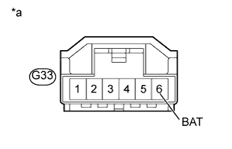
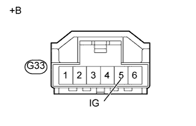

DTC C1432 Недопустимое напряжение питания датчика угла поворота рулевого колеса |
| Код DTC | Условие обнаружения DTC | Неисправный участок |
| C1432 | От датчика угла поворота рулевого колеса поступает сигнал неисправности в линии питания этого датчика. |
|
| 1.ПРОВЕРЬТЕ НАПРЯЖЕНИЕ НА КОНТАКТЕ (BAT) |
Убедитесь, что фиксирующая и соединительная части разъемов не ослаблены.
Отсоедините разъем G33 датчика угла поворота рулевого колеса.
|  |
Измерьте напряжение в соответствии со значениями, приведенными в таблице.
| Контакты для подключения диагностического прибора | Условие | Заданные условия |
| G33-6 (BAT) - масса | Всегда | 11 - 14 В |
| *a | Вид спереди разъема со стороны жгута проводов: (к датчику угла поворота рулевого колеса) |
|
| ||||
| OK | |
| 2.ПРОВЕРЬТЕ НАПРЯЖЕНИЕ НА КОНТАКТЕ (IG) |
Отсоедините разъем G33 датчика угла поворота рулевого колеса.
|  |
Измерьте напряжение в соответствии со значениями, приведенными в таблице.
| Контакты для подключения диагностического прибора | Положение переключателя | Заданные условия |
| G33-5 (IG) - масса | Зажигание включено | 11-14 В |
| *a | Вид спереди разъема со стороны жгута проводов: (к датчику угла поворота рулевого колеса) |
|
| ||||
| OK | |
| 3.ПРОВЕРЬТЕ ЖГУТ ПРОВОДОВ И РАЗЪЕМ (ЦЕПЬ ESS) |
Отсоедините разъем G33 датчика угла поворота рулевого колеса.
Измерьте сопротивление в соответствии со значениями, приведенными в таблице ниже.
| Контакты для подключения диагностического прибора | Условие | Заданные условия |
| G33-2 (ESS) - масса | Всегда | Менее 1 Ом |
|
| ||||
| OK | ||
| ||